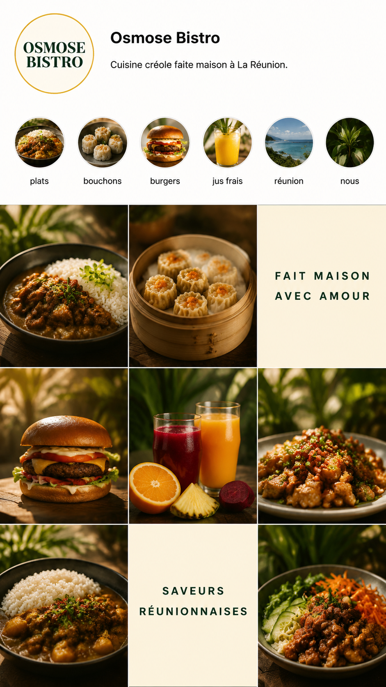
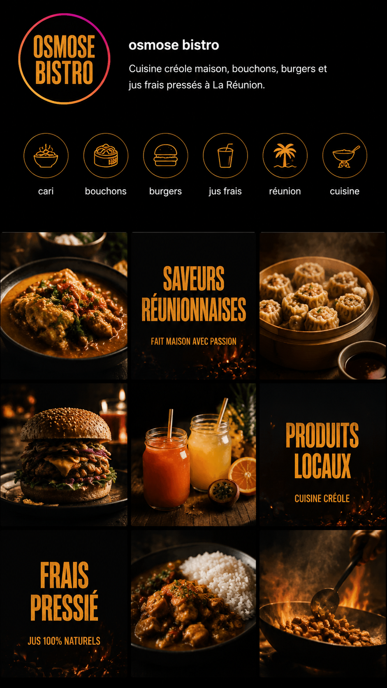
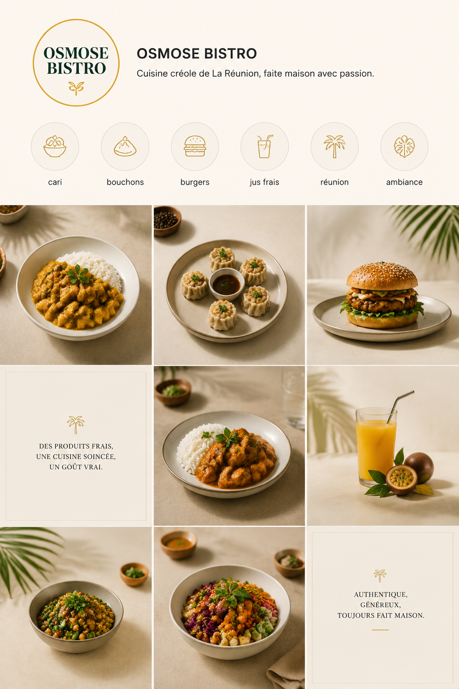
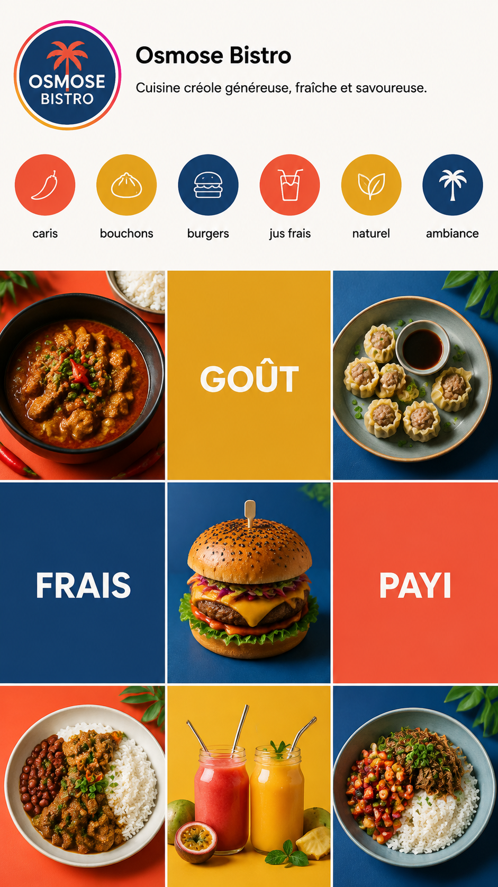
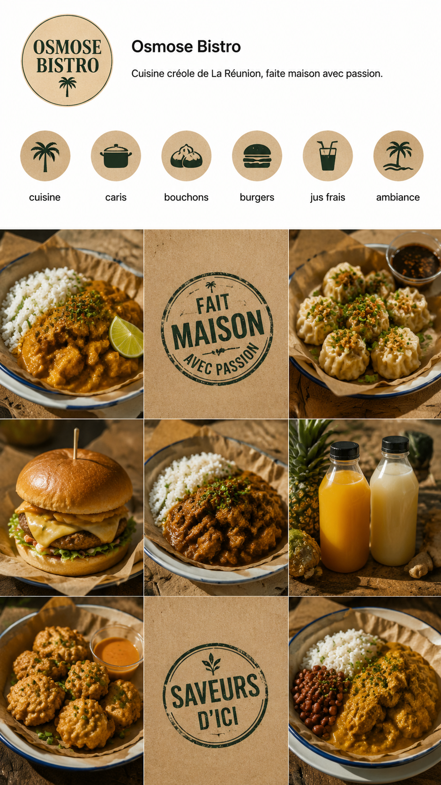

Même établissement, même cuisine, huit partis pris. Ce qui change : le rapport texte / photo et le registre visuel.
Un client n’achète pas « un feed » : il achète le sien. Cette planche sert à lui faire désigner un style en trente secondes, avant qu’on produise quoi que ce soit. Ensuite le style choisi devient sa charte, et chaque post en hérite.
Le style le plus chargé — cinq cartes de texte sur neuf — a été écarté : c’est celui qui fait « généré par une IA ». Sur les comptes réels mesurés, @kafkaf.fr n’a aucune tuile de texte sur douze, @legadiamb974 en a deux.

Le registre de @legadiamb974. Les cartes servent à annoncer, pas à décorer.

La charte FoodBoost appliquée : 60 % noir, 25 % ambre, 15 % rouge braise.

Beaucoup de vide, serif fin. Pour une table qui se veut haut de gamme.

Aplats saturés. Fort en vignette, risqué si la marque n’assume pas.

Papier kraft, tampon encré légèrement décalé. Registre marché, fait-main.
Ni prix, ni horaire, ni jour de fermeture, ni adresse, ni téléphone, ni nom de plat présenté comme le sien, ni avis client, ni note. Ces informations viennent du client, jamais du modèle — c’est la seule chose qu’une image générée invente sans qu’on le remarque.
Généré le 27/08/2026 · GPT Image 2 (gpt-image-2-image-to-image) · 6 crédits soit 3 centimes par feed